A Forja em fita
Direção de arte · lado A · os quadros de verdadeOs dez quadros abaixo saíram do Godot, no renderizador do jogo (Compatibility), com os pacotes Kenney que já estão no projeto, recoloridos por papel. Nenhuma imagem foi gerada por IA. Épico com respiros de humor: o mundo é escuro e quieto, os jogadores são as únicas luzes fortes, e a etiqueta de papel é onde o jogo escreve.
Antes e depois
A Centelha · faixa 01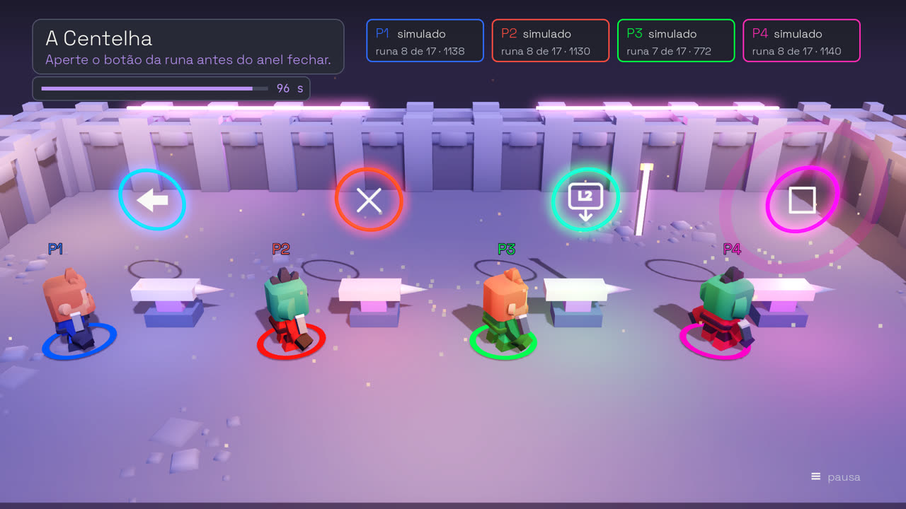
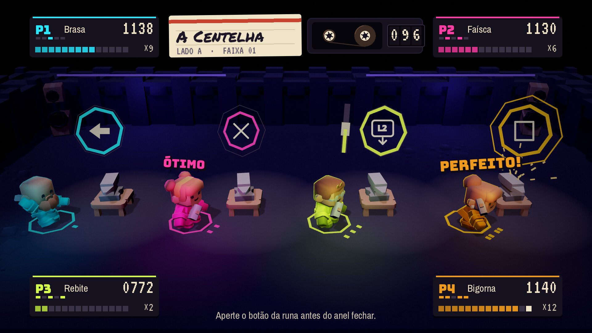
Os quadros-chave
Do título ao pódio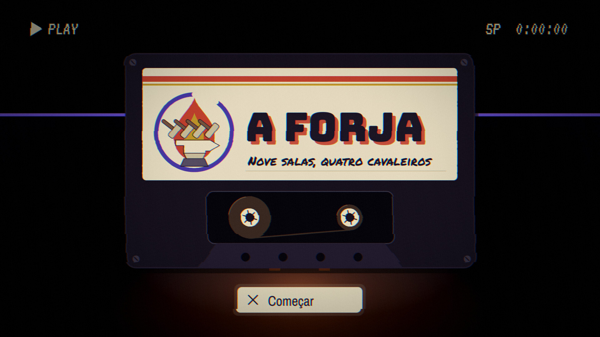
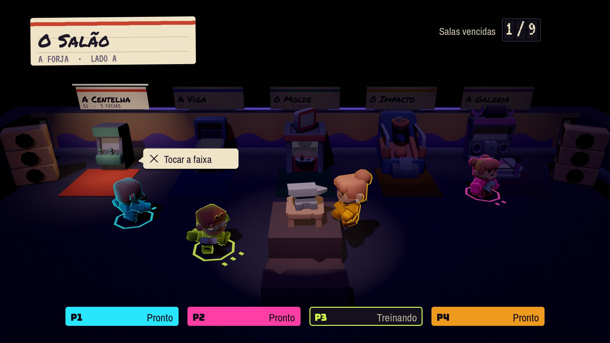
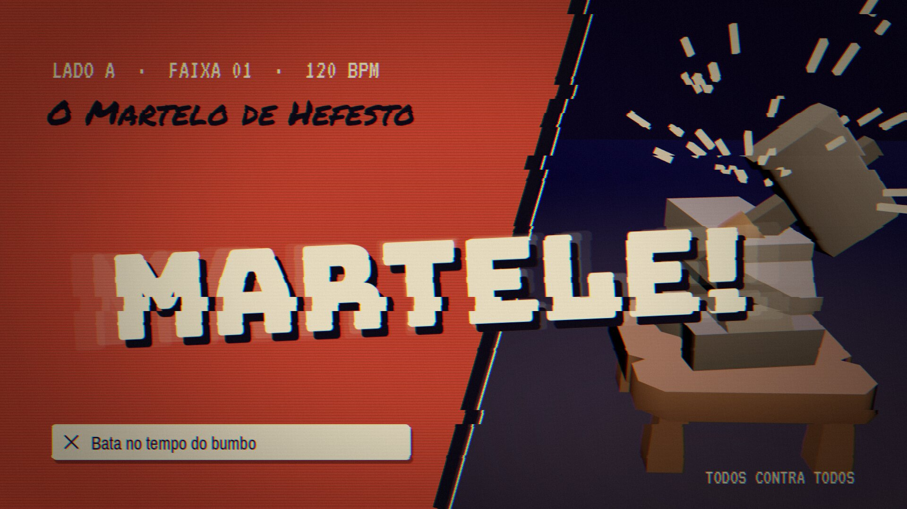
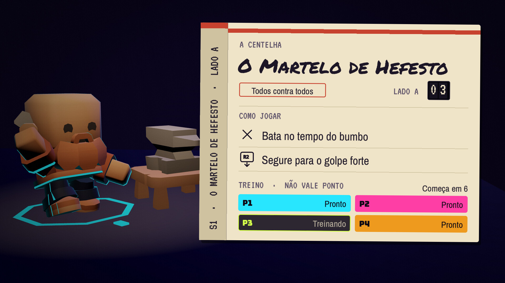
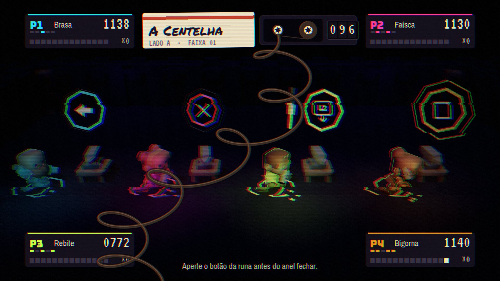
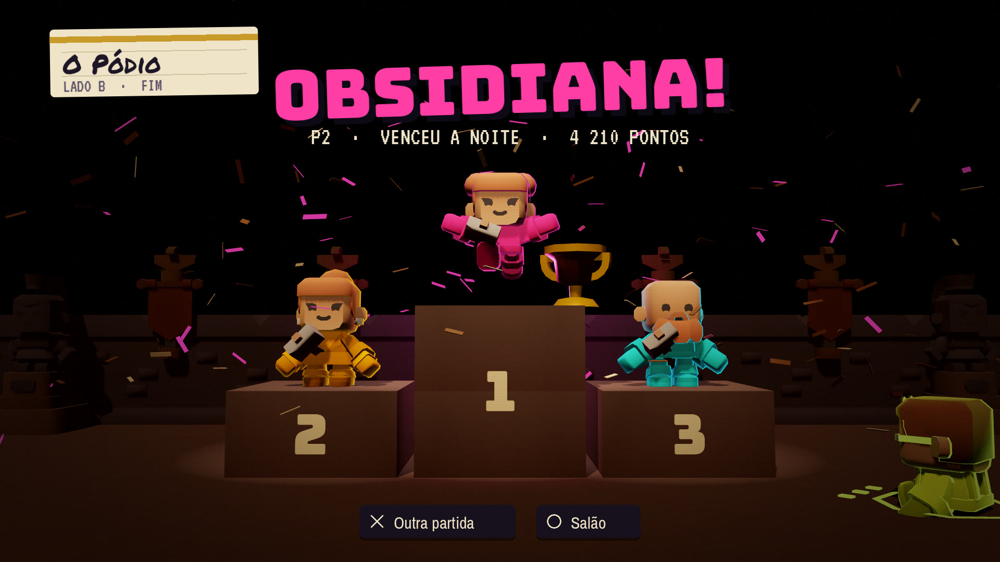
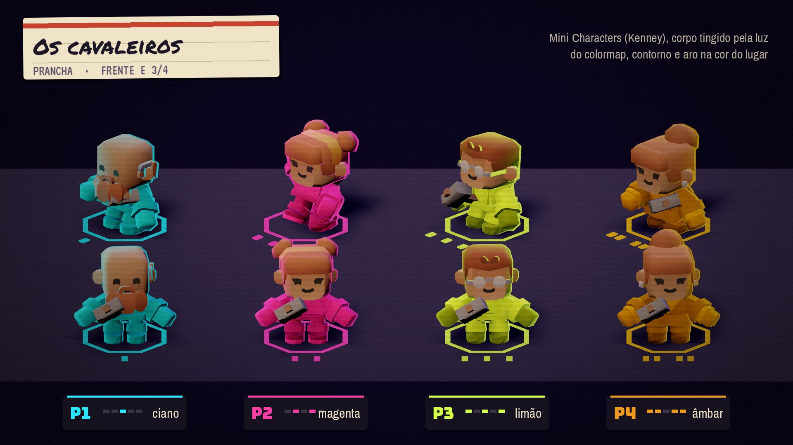
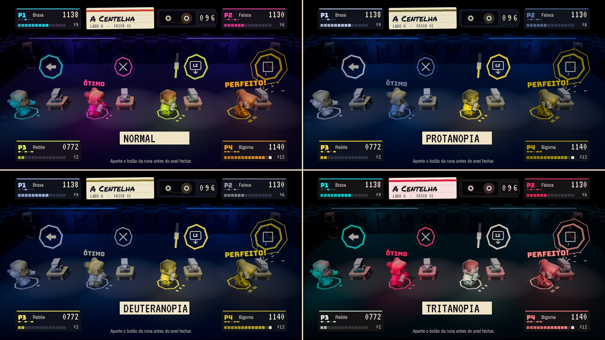
A Kenney na fita
Colormap · antes e depoisOs pacotes não são trocados, são recoloridos. Cada pacote ganha um papel, e a cor dele passa pelo OKLab: a claridade cai na faixa do papel, o croma encolhe, e um fio do violeta do cenário entra por cima. Assim cinco pacotes de paletas diferentes viram um lugar só, e os jogadores continuam sendo o que mais brilha.
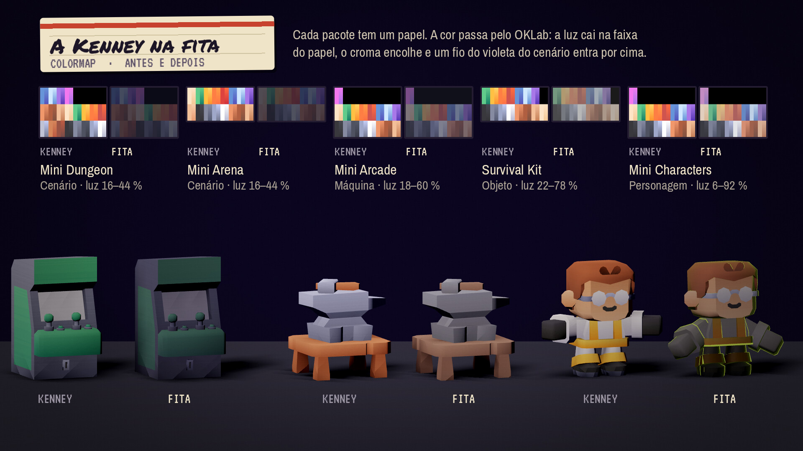
A paleta
Cada cor com um trabalhoA fita e o casco
O fundo e as placas. Nada aqui brilha.
#0d0a16#17121f#241c30#3a3346A etiqueta
O papel onde o jogo escreve: títulos, cartões, o pódio.
#efe4c8#cfc2a0#1c1626#5a4f66A luz do lugar
O violeta é o único néon da arquitetura e nunca passa de L 50. O tungstênio é luz, nunca traço.
#4a3aa8#1d1638#ffd9a8Os jogadores
Os únicos néons saturados da tela. Nenhuma dessas quatro cores aparece fora do jogador dono dela.
#29e6ff#ff3ea5#d4ff4a#ee9a1eAs seções
Tinta impressa, nunca néon: a faixa da etiqueta de cada lado.
#c8432f#2f55c4#1f8a7e#c79a2a#86409aO erro
Só no desregistro da Dissonância.
#ff2a4a#2a6bffAs letras e a luz
Quatro fontes · o que o Godot dá- BungeeO grito: MARTELE!, FAÍSCA!, A FORJA. Só em caixa alta, só grande.
- VT323A máquina: placar, contador, LADO A · FAIXA 01, PLAY.
- Archivo NarrowA fala: instrução, botão, menu. Todo texto que se lê inteiro.
- Permanent MarkerA caneta na etiqueta: o nome do minigame, o subtítulo. Nunca em instrução.
- Glow funcionaNo Compatibility o glow clareia o fundo cerca de 3,5 vezes; o estudo compensa com 0,45 no fundo.
- Sem SSAOO contato no chão vem do aro do jogador e de sombra pintada, não de oclusão.
- Uma sombraSó a luz direcional projeta sombra. As outras luzes são de cor, não de forma.
- Pós-processo da fitaGrão, linha de varredura leve e o rasgo de VHS nas transições. Quatro shaders: contorno, cavaleiro, néon e pós da fita.
As decisões
08/10/2026- A direçãoEscolhida a Fita Magnética com a Kenney recolorida. Esta página mora no repositório e guia todo trabalho visual da Forja. A bíblia de arte (o texto, os tokens no
tema.gde os portões que reprovam cor fora de token, fonte fora das quatro e texto abaixo de 30 px) sai desta página. - As cores dos jogadoresTrocadas nos dois lugares, na tela e na luz do controle: cianomagentalimãoâmbar. Saem o azul, o vermelho, o verde e o rosa de hoje.
- O logoFica o logo de hoje (a gota com os martelos), ajustado para funcionar na etiqueta: as cores dele passam para os tokens da Fita.
- A bigornaUma bigorna própria, modelada com o chifre visível, no estilo da Kenney. A do Survival Kit lê como bloco de longe.